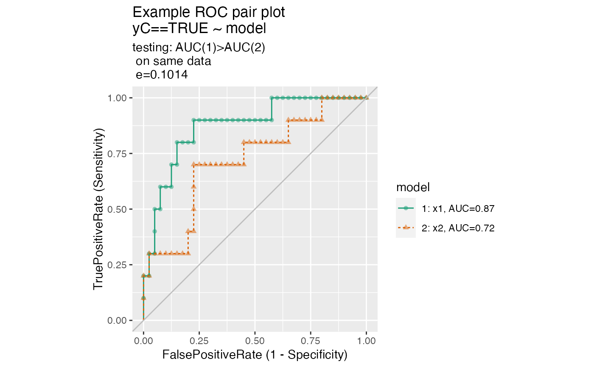

Plot two receiver operating characteristic curves from the same data.frame.
ROCPlotPair( frame, xvar1, xvar2, truthVar, truthTarget, title, ..., estimate_sig = FALSE, returnScores = FALSE, nrep = 100, parallelCluster = NULL, palette = "Dark2" )
| frame | data frame to get values from |
|---|---|
| xvar1 | name of the first independent (input or model) column in frame |
| xvar2 | name of the second independent (input or model) column in frame |
| truthVar | name of the dependent (output or result to be modeled) column in frame |
| truthTarget | value we consider to be positive |
| title | title to place on plot |
| ... | no unnamed argument, added to force named binding of later arguments. |
| estimate_sig | logical, if TRUE estimate and display significance of difference from AUC 0.5. |
| returnScores | logical if TRUE return detailed permutedScores |
| nrep | number of permutation repetitions to estimate p values. |
| parallelCluster | (optional) a cluster object created by package parallel or package snow. |
| palette | name of a brewer palette (NULL for ggplot2 default coloring) |
The use case for this function is to compare the performance of two models when applied to a data set, where the predictions from both models are columns of the same data frame.
If palette is NULL, plot colors will be chosen from the default ggplot2 palette. Setting palette to NULL
allows the user to choose a non-Brewer palette, for example with scale_color_manual.
set.seed(34903490) x1 = rnorm(50) x2 = rnorm(length(x1)) y = 0.2*x2^2 + 0.5*x2 + x1 + rnorm(length(x1)) frm = data.frame(x1=x1,x2=x2,yC=y>=as.numeric(quantile(y,probs=0.8))) # WVPlots::ROCPlot(frm, "x1", "yC", TRUE, title="Example ROC plot") # WVPlots::ROCPlot(frm, "x2", "yC", TRUE, title="Example ROC plot") WVPlots::ROCPlotPair(frm, "x1", "x2", "yC", TRUE, title="Example ROC pair plot", estimate_sig = TRUE)